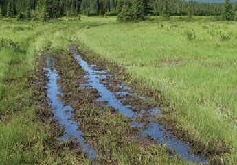

|
| ISSUE #4 |
|
Horses of the Ghost  Quad Damage in the Ghost Forest Marshland
Maureen Enns Studio Ltd. Christine Wiesenthal The Ghost Forest lies ahead of us under a low sky of unbleached boiled wool, long wisps of cloud wreathing the shoulders of the foothills. They shift among the hills, slow magicians, covering and uncovering patterns on the dark slopes, lodgepole stands all stippled white. Light snow still falling. From a ridge overlooking one valley, we spot nine or more of them in the distance. Rick and Maureen confer about the best route for our approach. I stare through binoculars at dark shapes grazing among thousands of snow-encrusted tussocks. From this distance, the mounded grass tufts look almost like feathered fetlocks, the terrain mirroring and magnifying the anatomy of the animals grazing it. For just a minute, habitat and inhabitants waver and blur, starting to merge into one whole as seamless as the field of my binocular vision. Maureen snaps me out of it. Once we get down the ridge, she says, we’ll have to remove our swishy nylon outer jackets. It’s freezing out here, but I’m not about to argue. She has already vetoed the pink Calgary Flames toque I showed up with, handing me instead a dark hat. Until now, there’s been no category on my resumé for Sneaking Up On Wild Horses. The last slog across a slurry of semi-frozen bog is the worst. The cold is rawest down here, and the wind picks up. We advance circuitously, skirting the treeline for as long as possible, lumbering over the muskeg, sinking in snow to our knees. Maureen’s deep boot tracks ahead of me start to well with dark water the minute her feet leave for another step. It’s a graphic reminder of the Ghost Forest’s critical function as a catchment basin, a spongy water trough for the growing and thirsty urban populations downstream, in places like Calgary and Cochrane.
|
This is an excerpt of the full article. To view complete text, please subscribe . You may also purchase a back issue |
Lake publishes fiction, poetry, critical essays, interviews, reviews and visual arts related to the environment.
|
Lake - Journal of Arts and Environment
Faculty of Creative and Critical Studies at the University of British Columbia Okanagan |
| web design by Idea Bureau |